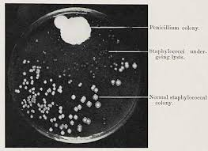

There are reasons to read this book and not to read this book.
First, the not-reason. From the title, Human Accomplishment details the successes of humans from 800 BCE to 1950—2750 years of achievement by the top-tier of homo sapiens. Statistically speaking, the average person will neither contribute nor perform anything absolutely significant to society. (They may contribute some relatively significant, but nothing absolute.) This book serves as a stark reminder of this fact. Some are uncomfortable with this and prefer to live thinking that they have or eventually will have a profound impact on the world, which is perfectly fine. Don't read this book. [FINISH]
Now, the more compelling to-reason from another perspective. From the title, Human Accomplishment details the successes of humans from 800 BCE to 1950—2750 years of achievement by the top-tier of homo sapiens. Conveniently compiled in a single 668-page book (including the main body chapter, appendices, notes, bibliography, and index), Murray objectively (more on the use of this term later) lays out the crowning moments of the human race in science and the arts. No need to go through volumes of text wondering if your favorite author is considered among the best ever (hint: they're probably not). Instead, consult this book and find out who the best ever are, and not just in literature. Choose among sciences, philosophy, art, and technology.
The amount of additional material provided to the reader is astounding.
Do not let Murray's reputation from his book The Bell Curve dissuade you from reading this book. While there are some topics that will no doubt draw criticisms from some readers (e.g., the lack of women among the significant figures), Murray defends his position both qualitatively and quantitatively and invites the reader to challenge him with a rebuttal of their own.
How is one to define excellence, when it is by definition subjective? One person may consider a Jackson Pollock painting to be excellent, while another may deem it pointless and ugly. So, who's to say what's excellent and what's not?
Murray gives two separate definitions for excellence: one for science and one for the arts. (Murray separates analyses for science and art throughout the book, as they should be viewed separately.)
Murray's first indicator of excellence is truth>, defined by William James (Stanford Encyclopedia of Philosophy, Wikipedia) as "true ideas are those that we can assimilate, validate, corroborate, and verify." This idea of validation and verification is one of the tenets of science.
Another question Murray asks is "Does Importance Equal Excellence in Scientific Accomplishment?" Generally, yes—and Murray agrees. Exceptions include accidental discoveries or inventions, such as Alexander Fleming's discovery of penicillin. After leaving out petri dishes over a number of days, he noticed one petri dish was behaving oddly: one part did not have the bacteria growth he expected. [FINISH] This discovery was incredibly important, providing [FINISH]
